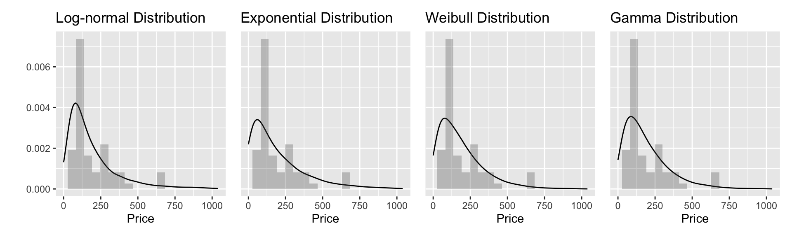
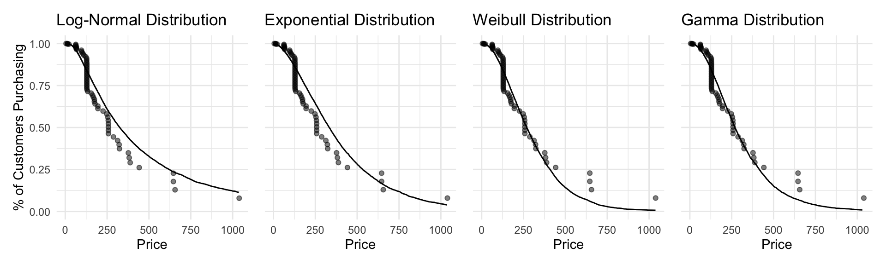
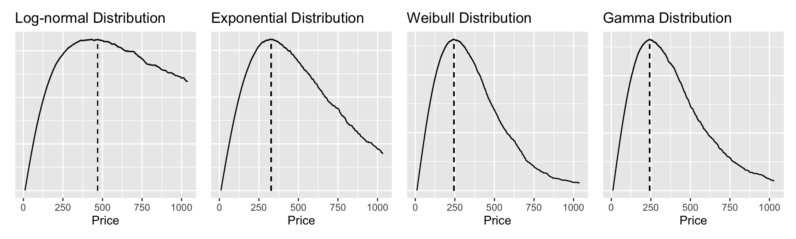

Non-regression techniques for Demand Curves
I’ve estimated the customer distribution for Halo, with 4 different distributions: Log-normal, Exponential, Weibull, and Gamma. All 4 of these distributions are commonly used in survival analysis, where one tries to estimate a distribution, especially the tails of how long something will survive. It’s an analysis tool that I used working for Alex and Amano and is the gold-standard in engineering and actuarial life-time estimation. I know it sounds strange, but I think the structure of problems that survival analysis tackles are identical to our problem of how to construct the demand curve.
Below are the distribution estimates and a histogram of the halo WTP data. I call these non-regression techniques, but they still are a form of regression. Instead of predicting Quantity using Price as a covariate we just predict Price that is what the next WTP is going to be. For example the log-normal distribution here literally uses the equivalent code:
Each distribution below looks eerily similar to each other. You’d expect them to look very different especially when you look at how different the distributions look in their the wiki articles for Gamma, Exponential. But this isn’t a cause for alarm, since these plots represent posterior predictive bayesian simulations from multiple different fits stacked together.
To take the exponential plot as an example, this isn’t just one exponential fit, but all of the plausible exponential fits layered together to make a non-exponential looking simulation. As more data is collected, we become more selective of all the exponential fits we think are actually plausible, and this plot will begin to resemble more and more a single exponential distribution that only slopes downward like the ones we see on it’s wiki page.
The upside of all of this is that we don’t have to worry about getting the perfect distribution chosen especially with sparse data. They will give roughly the same answers.
This is lucky because there’s not a really pure way to compare model choice in the way that people use \(R^2\) to compare regressions. Though I do think it would be worth investigating some model comparison metrics eventually.

Above I created the \(1 - CDF\) for each of the simulations along with the halo data mapped on. In survival analysis are called survival functions which I like to imagine as “how many people would survive and still be our customers if we raised our price X amount.”
These are just the cumulative sum of the distributions I showed in the first plot. But the huge upside to these versions of the demand curves is that they don’t violate the independence assumption at all. I don’t have any proof for why violating independence is so bad, but I think it’s telling that survival analysis would balk at using regression here. Instead they’d model the distribution of how long things last, and we are trying to find the distribution for how long customers will allow us to ratchet up our prices.
They’re all s-shaped, but just like our fist plots of the density curves with more data each distribution will begin to resemble it’s own \(CDF\). Which aren’t always s-shaped.
The intercept is going to be 1 for these graphs, representing that 100% of our surveyed people would buy the product if it were free. In some ways this is nice. It means that scaling from the sample size to the population size is very intuitive, just multiply the entire curve by your population. In other way’s this is unfortunate because it implies that each customer will only buy one of our products, a “durable” good. I see ways to address this, but I won’t go into them here. Additionally it sounds like you have a nice interpretation for the intercept parameter, that you were using in your explanation of what is competitive advantage. I’m not sure if getting rid of that interpretable intercept makes this approach irredeemable to you.

For this last plot I modeled profit. I plugged in:
- variable cost: $10
- fixed cost: $1,000
- population: 10,000
I compared the optimal profitability price to what your current calculator/website gives for each regression transformation:
Regressions
- Linear: $300
- Exponential: $214
- Sigmoid: $155
Distributions
- log-normal: $469
- exponential: $327
- weibull: $243
- gamma: $242
Admittedly the differences between log-normal best price and the weibull best price are quite big. But I think the consensus among the distribution methods that the price should be greater than >$250 is stark. Especially when we look at how the current profit analytics calculator recommends the sigmoid regression to have the best fit, and it only gives the optimal price at $155.
This probably needs to be tested against the other WTP datasets you gave me to see if these type of results replicate. Let me know your level of interest in this approach and I can see how much time I can devote to it.